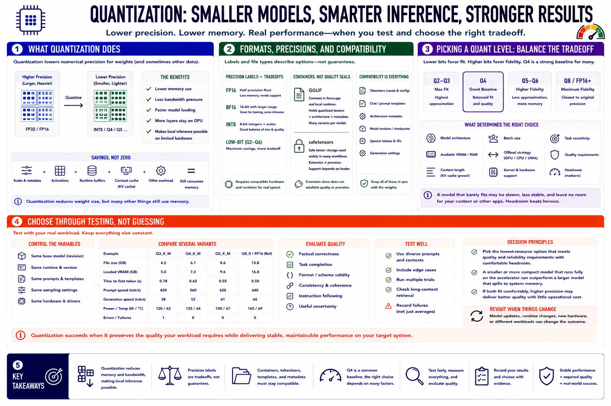

Course Summary and Key Takeaways
Connecting to LMS... Progress: in progress

Narration
Quantization lowers the numerical precision used for model weights and sometimes other data. It reduces memory and bandwidth pressure, making local inference practical on hardware that cannot support the original precision. The savings can improve model loading and allow more layers to remain on an accelerator, but scales, metadata, activations, runtime buffers, and context cache still consume memory.
Precision labels describe tradeoffs, not guaranteed outcomes. FP16, BF16, INT8, and low-bit formats require compatible hardware and runtimes. GGUF and safetensors are containers used in different workflows; neither extension alone establishes quality or precision. Tokenizers, templates, architecture metadata, and model revisions must remain compatible.
Q4 is often a useful baseline, while lower levels favor fit and higher levels favor fidelity. The right choice depends on model architecture, available VRAM or RAM, context, batch, offload, kernel support, and task sensitivity. A model that barely fits may run worse than a smaller or more compact option with headroom.
Choose through testing. Compare several variants with the same runtime, prompts, settings, and hardware. Measure speed and memory, evaluate factual and task quality, repeat trials, and record the configuration. Quantization succeeds when it preserves the quality required by the workload while delivering stable, maintainable performance on the target system.